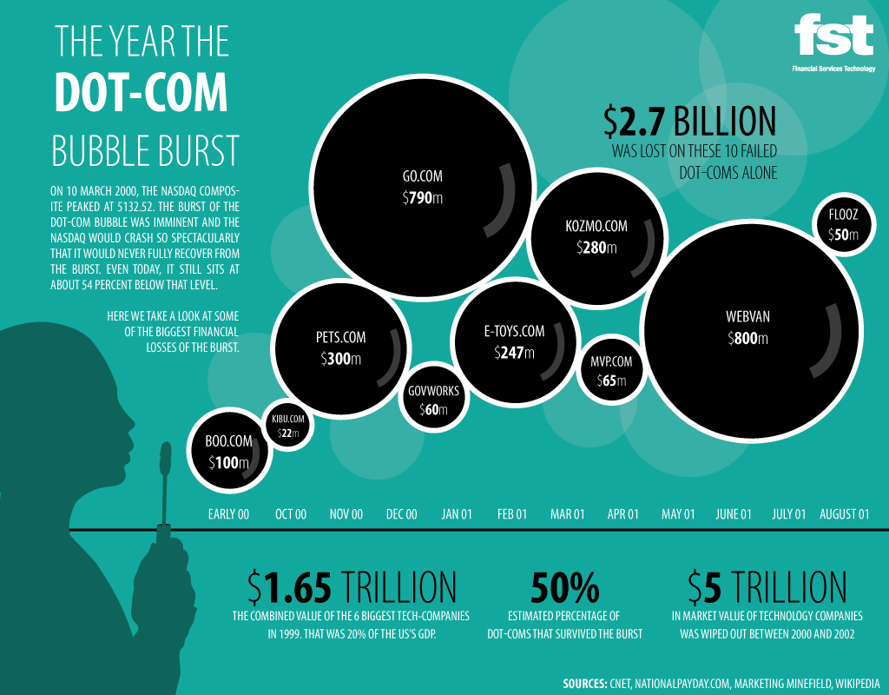

The dotcom bubble's origins can be traced to the launch of
the World Wide Web in 1989, the subsequent establishment of internet and
tech-based start-up companies during the 1990s, and rising momentum as the
decade came to its end.The dot-com bubble ix also known as the dot-com boom
and it was a period of extreme growth in the usage and adoption of the Internet
across the world.The two main factors that led to burst of internet bubble are:The
use of metrics that hit the cash flow,Significantly overvalued stocks
- PRELUDE OF BUBBLE:
The 1993 release of Mosaic and subsequent web browsers during the following years
gave computer users access to the World Wide Web, popularizing use of the Internet.
Internet use increased as a result of the reduction of the "digital divide" and advances in connectivity,
uses of the Internet, and computer education. Between 1990 and 1997, the percentage of households in the United States
owning computers increased from 15% to 35% as computer ownership progressed from a luxury to a necessity.
This marked the shift to the Information Age, an economy based on information technology, and many new companies were founded.
At the same time, a decline in interest rates increased the availability of capital.
The Taxpayer Relief Act of 1997, which lowered the top marginal capital gains tax in the United States,
also made people more willing to make more speculative investments.
Alan Greenspan, then-Chair of the Federal Reserve, allegedly fueled investments in the stock market by putting a positive spin on stock valuations.
The Telecommunications Act of 1996 was expected to result in many new technologies from which many people wanted to profit
- BURST OF THE BUBBLE:
After lowing their interest rates in the mid 1990s, the American Federal Reserve increased them nearly six times in early 2000.[22] That was a major reason why the economy began to lose strength.
The numerical burst of the Dotcom bubble began as just said before on Friday, March 10, 2000 with a NASDAQ score of 5,048.62, which was a score more than twice as large as one year before. But the majority did not know about the bursting bubble and what was going on these days.